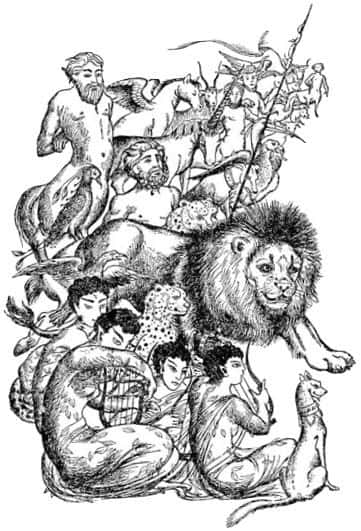

Peter’in İlk Savaşı
Cüce ve Beyaz Cadı bunları konuşurken kilometrelerce uzakta kunduzlar ve çocuklar sürekli tatlı bir rüyaya doğru yürüyormuş gibiydiler. Paltolarını uzun süre önce geride bırakmışlardı. Artık birbirlerine “Bak! İskelekuşu” ya da “Bence çançiçekleri bunlar!” ya da “Bu güzel koku ne?” ya da “Şu ardıçkuşunu dinleyin!” demeyi bile bırakmışlardı. Her şeyi içermiş gibi sessizce, ılık gün ışığı düşmüş yerlerden soğuk, yeşil ağaçlıklardan, uzun kara ağaçların ormanın yapraktan çatısını üzerlerinde iyice yükselttiği geniş ve yosunlu açıklıklardan, çiçek açmış kuşüzümü kümelerinden ve neredeyse tatlı çok güçlü bir kokunun yayıldığı alıçların arasından geçerek yürüdüler.
Kışın kaybolup bütün ormanın birkaç saatte ocak ayından mayısa geçtiğini gördüklerinde Edmund kadar şaşırmışlardı. Aslan’ın Narnia’ya geldiğini duyduklarında bile bunun böyle olacağını kesinlikle (Cadı’nın bildiği kadar) bilmiyorlardı. Ama hepsi Cadı’nın büyülerinin sonsuz kışı yarattığını biliyorlardı; bundan dolayı, bu büyülü bahar başladığında Cadı’nın planlarında bir şeyin yanlış, hem de çok kötü bir biçimde yanlış gittiğini anlamışlardı. Karların erimeye başlamasıyla Cadı’nın artık kızağını kullanamayacağını anladılar. Bundan sonra o kadar acele etmediler, daha sık ve daha uzun süre dinlenmeye başladılar. Kuşkusuz artık oldukça yorgundular; fakat benim ölü gibi yorgun diyebileceğim kadar da değil – sadece ağırlaşmışlar ve dışarıda geçirilen uzun bir günün sonunda hissedileceği gibi, sakin ve sanki rüyadaymış gibi hissediyorlardı kendilerini. Susan’ın topuklarından biri azıcık su toplamıştı.
Büyük nehrin yatağını bir süre önce terk etmişlerdi; çünkü Taş Masa’nın bulunduğu yere ulaşabilmeleri için biraz sağa (bu, biraz güneye anlamına geliyor) dönmeleri gerekiyordu. Eğer bu yolu izlemeselerdi, karlar erimeye başladığında nehrin vadisinde yol almaları olanaksız olacaktı, çünkü erimenin sonucu olarak hemen aşağıda nehrin yatağını sel basmıştı – gürüldeyen, gümbürdeyen, harika, sarı bir sel – ve patikalar su altında kalmıştı.
Şimdi güneş iyice alçalmış, ışıkları kızarmış, gölgeler uzamıştı ve çiçekler, kapanmayı düşünmeye başlamışlardı.
“Fazla sürmez artık” dedi Bay Kunduz ve yalnızca çok sık olmayan yüksek ağaçların bulunduğu, uzun ve yumuşak yosunlarla kaplı (üzerlerine basmak hoş bir duyguydu) bir yerde yokuş yukarı yöneltti onları. Uzun bir günün sonunda gelen bu tırmanış hepsini soluk soluğa bıraktı. Lucy bir mola daha vermeden, gerçekten tepeye ulaşıp ulaşamayacağını merak ettiği anda tepeye geldiler. Gördükleri şuydu.
Her yönde göz alabildiğine uzanan ormanlara yukarıdan baktıkları yeşil ve açık bir alandaydılar. Karşılarında, uzakta ve doğuda, hareket edip pırıldayan bir şey vardı. “Vay canına!” diye fısıldadı Peter, Susan’a, “Deniz!” Taş Masa tepedeki açık alanın tam ortasındaydı. Dört taş ayakla desteklenen büyük, gri ve çirkin bir yassı taştı. Çok eski görünüyordu. Her tarafına belki de bilinmeyen bir dilin harfleri olan tuhaf çizgi ve şekiller oyulmuştu. Baktığınızda tuhaf bir his veriyordu. Sonra alanın bir yanına kurulmuş olan çadırı gördüler. Güzel bir çadırdı bu – ve özellikle batan güneşin ışıklarının üzerine vurduğu şu anda. Çadırın yan duvarları sarı ipek ve kırmızı kadifeden, kazıklarıysa fildişindendi. Tepesinde yükselen direkte, uzaklardaki denizden gelip yüzlerini yalayan rüzgârda dalgalanan şaha kalkmış bir Aslan’ın bulunduğu bir bayrak vardı. Çadıra bakarken sağ taraflarından gelen bir müzik işittiler ve o yana döndüklerinde merak ettikleri şeyi gördüler.
Aslan, yarımay şeklinde etrafına dizilmiş yaratıklar grubunun ortasında durmaktaydı. Kalabalıkta Ağaç-Kadınları ve Pınar-Kadınları vardı ve (bizim dünyamızda orman ve su perileri diye bilinirlerdi) telli sazlarıyla melodiyi seslendiriyorlardı. Dört koca sentorun bedenlerinin bir bölümü iri İngiliz çiftlik atlarına, diğer bölümü de sert ve yakışıklı dev insanlara benziyordu. Tek boynuzlu bir at, insan başlı bir boğa, bir pelikan, bir kartal ve bir de kocaman köpek vardı. Aslan’ın yanında, biri onun tacını, diğeri de sancağını taşıyan iki leopar durmaktaydı.

Aslan’a gelince; kunduzlar ve çocuklar onu gördükleri an ne diyeceklerini bilemediler. Narnia’da yaşamamış insanlar bazen bir şeyin aynı zamanda hem iyi hem de kötü olamayacağını düşünürler. Çocuklar, geçmişte böyle düşünmüş olsalar bile şimdi durum farklıydı. Çünkü Aslan’ın yüzüne bakmayı denediklerinde sadece altın rengi yelesi ve büyük, soylu, heybetli ve karşı konulamaz gözleriyle karşılaştılar, sonra da ona bakamayacaklarını anlayıp titremeye başladılar.
“Haydi” diye fısıldadı Bay Kunduz.
“Hayır” dedi Peter, “Önce sen.”
“Hayır, hayvanlardan önce, Âdemoğulları” diye fısıldadı Bay Kunduz yine.
“Susan” diye fısıldadı Peter, “sen iyi misin? Önce bayanlar.”
“Hayır, sen en büyüğümüzsün” diye fısıldadı Susan. Kuşkusuz bu konuşmalar uzadıkça, kendilerini daha da beceriksiz hissettiler. Nihayet Peter her şeyin kendine bağlı olduğunu anladı. Kılıcını çekti, selamlamak için kaldırdı ve telaşla diğerlerine “Haydi. Kendinize gelin” diyerek Aslan’a doğru ilerledi ve “Biz geldik, Aslan” dedi.
“Hoş geldin Peter, Âdemoğlu” dedi Aslan.
“Hoş geldiniz Susan ve Lucy, Havvakızları. Hoş geldiniz erkek ve dişi kunduzlar.”
Sesi derin ve yankılıydı ve nasıl olduysa içlerindeki huzursuzluğu giderdi. Şimdi hepsi sakin ve mutluydular. Orada durup da bir şey söylememek pek tuhaf gelmiyordu artık.
“Peki, dördüncünüz nerede?” diye sordu Aslan.
“Onlara ihanet ederek Beyaz Cadı’nın tarafına geçti ey Aslan” dedi Bay Kunduz.
Sonra Peter, “Bu kısmen benim hatamdı Aslan. Ona kızmıştım ve bu onun yanlış davranmasına neden oldu” deme ihtiyacını duydu.
Aslan, Peter’e ne bağışlayıcı ne de suçlayıcı bir söz etti. İri ve sabit bakışlarıyla onu süzerek öylece durdu. Görünen oydu ki kimsenin söyleyecek sözü yoktu.
“Lütfen Aslan” dedi Lucy, “Edmund’u kurtarmak için bir şeyler yapamaz mısın?”
“Elimden geleni yapacağım” dedi Aslan. “Fakat bu, sandığınızdan daha zor olabilir.” Sonra yeniden bir süre sustu. Bu ana kadar Lucy Aslan’ın yüzünün ne kadar soylu, güçlü ve uysal göründüğünü düşünüyordu. Ama o an kederli olduğunu anladı. Ancak bir dakika sonra bu ifade tamamıyla kayboldu. Aslan yelesini silkeleyip pençelerini salladı (“Korkunç pençeler” diye düşündü Lucy, “eğer yumuşak davranmasını bilmeseydi!”).
“Şimdi, ziyafet hazırlansın. Bayanlar, Havvakızlarını çadıra götürüp ihtiyaçlarını karşılayın” dedi Aslan.
Kızlar gittikten sonra Aslan – kadife gibi olmasına karşın oldukça ağır olan – pençesini Peter’in omzuna koyarak “Gel Âdemoğlu” dedi, “sana kralı olacağın kaleyi uzaktan da olsa, göstereyim.”
Peter kılıcı hâlâ elinde, Aslan’la birlikte tepenin doğu yakasına gitti. Orada harika bir görüntüyle karşılaştı. Güneş, arkalarından batmaktaydı. Bunun anlamı, aşağıdaki tüm topraklara, akşamın çökmekte olduğuydu – orman, tepeler, vadiler ve gümüş bir yılan gibi dolanan büyük nehrin aşağı kısmı. Bunların ötesinde, kilometrelerce uzakta deniz vardı. Denizin ötesindeyse günbatımının yansımasıyla gül rengine dönüşmekte olan, bulutlarla dolu bir gökyüzü uzanıyordu. Fakat Narnia topraklarının denize kavuştuğu yerde – aslında büyük nehrin ağzında – küçük bir tepenin üzerinde parlayan bir şey vardı. Bu bir kaleydi. Parlıyordu çünkü güneş ışıkları batıya, Peter’e bakan taraftaki pencerelerden yansıyordu. Bu, Peter’e deniz kenarında dinlenen dev bir yıldız gibi göründü.
“Ey insan” dedi Aslan, “Burası dört tahtlı Cair Paravel’dir. Bunu sana gösteriyorum çünkü en büyükleri sensin. Dört tahttan birinde sen oturacaksın ve diğerlerine hükmeden Büyük Kral olacaksın.
Peter yine bir şey söylemedi, çünkü o anda garip bir ses aniden sessizliği böldü. Boru sesine benziyordu, ama daha gürdü.
“Kız kardeşinin boynuzu” dedi Aslan, Peter’e alçak bir sesle. Öyle alçaktı ki neredeyse – bir aslanın mırıldandığını düşünmek saygısızlık olmazsa eğer – bir mırıltı gibiydi.
Peter o an hiçbir şey anlamadı. Sonra tüm diğer yaratıkların ileri atıldığını, ama Aslan’ın bir pençesini sallayarak, “Geri gelin! Bırakın Prens ilk sınavını versin” dediğini duyunca anladı; vargücüyle çadıra doğru koşmaya başladı. Ve orada o dehşetli manzarayı gördü.
Orman ve su perileri her yöne kaçışıyordu. Lucy kısa bacaklarının elverdiği hızla ona doğru koşuyordu ve yüzü bir kâğıt kadar beyazdı. Sonra Susan’ın, arkasında gri bir canavar olduğu halde bir ağaca doğru koştuğunu ve tırmandığını gördü. Peter önce onun bir ayı olduğunu sanmıştı. Sonra bir köpekten beklenmeyecek irilikte bir Alsas çoban köpeğine benzediğini düşündü. Sonunda bunun bir kurt – arka ayakları üzerinde dikilmiş, ön ayakları ağacın gövdesine dayalı, hırlayan ve ısırmaya çalışan bir kurt olduğunu anladı. Sırtındaki tüm tüyleri dikilmişti. Susan ikinci büyük daldan daha yükseğe tırmanamamıştı. Bacaklarından biri aşağıya sallanıyordu ve ayağı kurdun dişlerinden sadece üç-beş santim uzaktaydı. Peter niçin daha yükseğe tırmanmadığını ya da en azından niçin daha sıkı tutunmadığını merak ediyordu. Sonra onun bayılmak üzere olduğunu ve bayılırsa da ağaçtan düşeceğini anladı.
Peter çok cesur hissetmiyordu kendini; aslında midesi bulanıyordu. Fakat bu onu engellemedi. Canavara doğru saldırıya geçti ve kılıcını salladı, fakat ıskaladı. Kurt şimşek gibi bir hızla, gözleri alev alev, öfkeyle uluyan ağzı sonuna kadar açık olarak ona döndü. Ulumasını gerektirecek kadar öfkeli olmasaydı kurt, Peter’i boğazından hemen yakalayabilirdi. Oysa – tüm bunlar Peter’in düşünmesine fırsat vermeyecek kadar çabuk oldu – Peter’in yana çekilecek kadar zamanı olmuştu ve kılıcını, olanca gücüyle hayvanın ön ayakları arasına, kalbine sapladı. Sonra ancak kâbusta görülebilecek karmaşık ve kötü bir an geldi. Peter tüm gücüyle kılıcına asılıyor, çekmeye çalışıyordu. Kurt ölü mü, diri mi anlamak mümkün değildi. Hırlayarak saldırdığı sırada Peter’in başına doğru hamle yapmış; kılıç böğrüne saplandığında kan ve tüyleri Peter’in üstüne başına bulaşmıştı. Az sonra Peter, canavarın hareketsiz yattığını gördü. Kılıcını çekip çıkardı. Doğrulmaya çalışırken yüzündeki terleri siliyordu. Müthiş bir yorgunluk çöktü üstüne.
Susan ağaçtan indi. O ve Peter oldukça sarsılmışlardı. Her iki tarafta da ağlayanların ve kutlayanların olmadığını söyleyemem. Fakat Narnia’da kimse bundan dolayı hakkınızda kötü düşünmez.
“Çabuk! Çabuk!” diye bağırdı Aslan. Sentorlar! Kartallar! Çalılıklarda bir kurt daha görüyorum. Orada – arkanızda. Az önce kaçtı. Hepiniz peşine düşün. Sahibine gidiyor olmalı. İşte size Cadı’yı bulup dördüncü Âdemoğlu’nu kurtarma şansı.” Ve o an en hızlı yaratıklardan onlarcası toynaklarının patırtısı ve kanat çırpışlarıyla çökmekte olan karanlığın içinde kayboldular.
Hâlâ nefes nefese olan Peter döndü ve Aslan’ın çok yakınında olduğunu gördü.
“Kılıcını temizlemeyi unutmuşsun” dedi Aslan.
Doğruydu bu. Peter parlak kılıca baktı ve her tarafının kurdun kan ve tüyleriyle kaplı olduğunu gördü. Çömelerek kılıcını çimlerde temizledi, sonra da ceketiyle kuruladı.
“Kılıcını bana ver ve diz çök, Âdemoğlu” dedi Aslan. Peter emri yerine getirince kılıcın yassı tarafıyla ona dokundu ve “Ayağa kalk, Sör Peter Kurtöldüren” dedi, “ve ne olursa olsun kılıcını temizlemeyi asla unutma.”